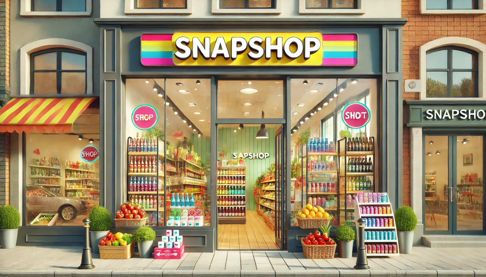
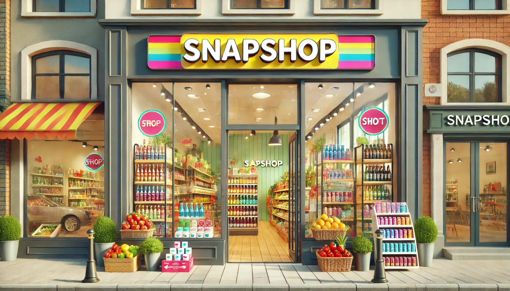

SnapShop
🕒 Monday - Friday: 8:00 AM - 8:00 PM
🕒 Saturday - Sunday: 9:00 AM - 6:00 PM
Sta. Cruz Market, Ilocos Sur
0927713153
Our physical store is a one-stop destination for daily essentials, offering a wide range of high-quality products, including drinks, sweets, toiletries, and fresh fruits and vegetables. Designed for convenience, our store layout ensures an easy shopping experience with well-organized aisles and clearly labeled sections. Customers can find fresh produce sourced from trusted suppliers, ensuring that every item meets high standards of quality and freshness. Our selection of beverages and sweets caters to all preferences, from refreshing drinks to delightful treats. With a clean and welcoming atmosphere, we aim to provide a comfortable and enjoyable shopping experience for everyone.
Beyond just offering products, our store prioritizes customer satisfaction by providing excellent service and a friendly shopping environment. Our staff is always ready to assist with recommendations, inquiries, and any special requests. We regularly update our inventory to bring in the latest products and seasonal offerings, ensuring customers always have access to the best choices. Hygiene and cleanliness are top priorities, especially in handling fresh produce and toiletries, so customers can shop with confidence. Whether stopping by for quick essentials or doing a full grocery run, our store is committed to delivering convenience, quality, and a pleasant shopping experience.
 
